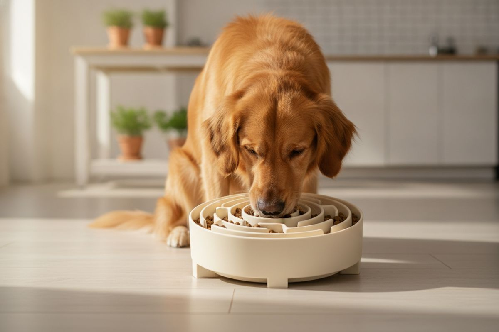
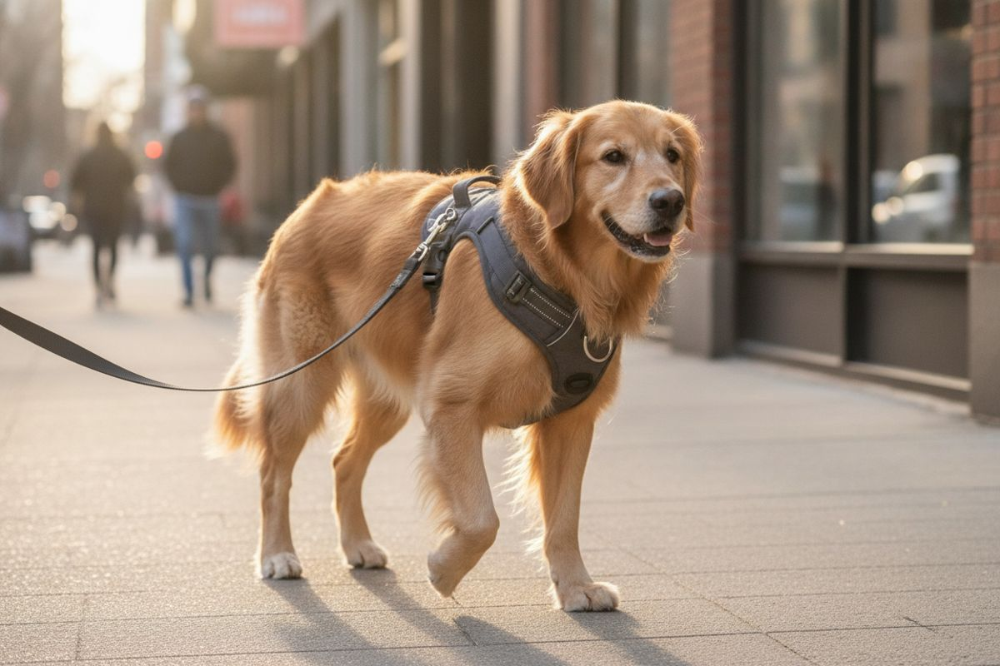
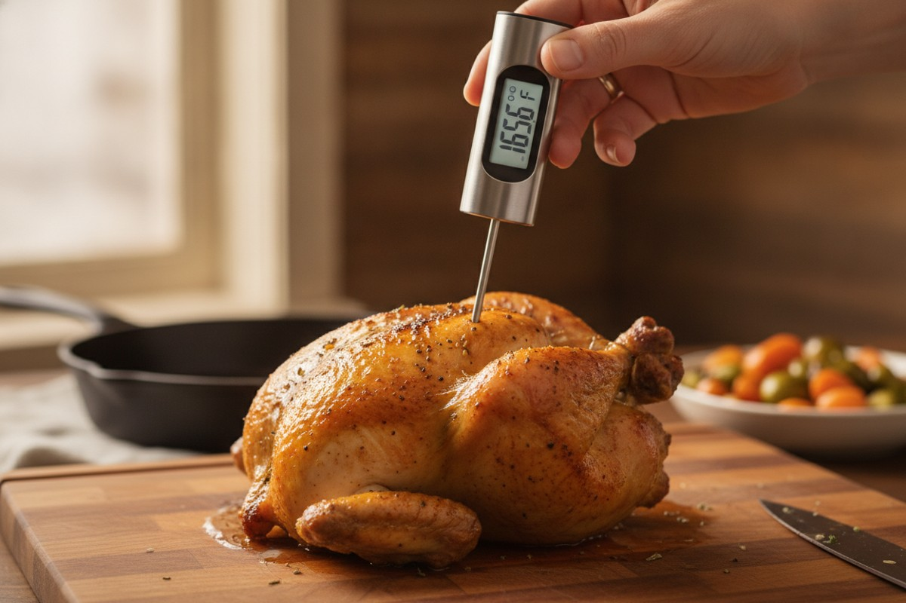
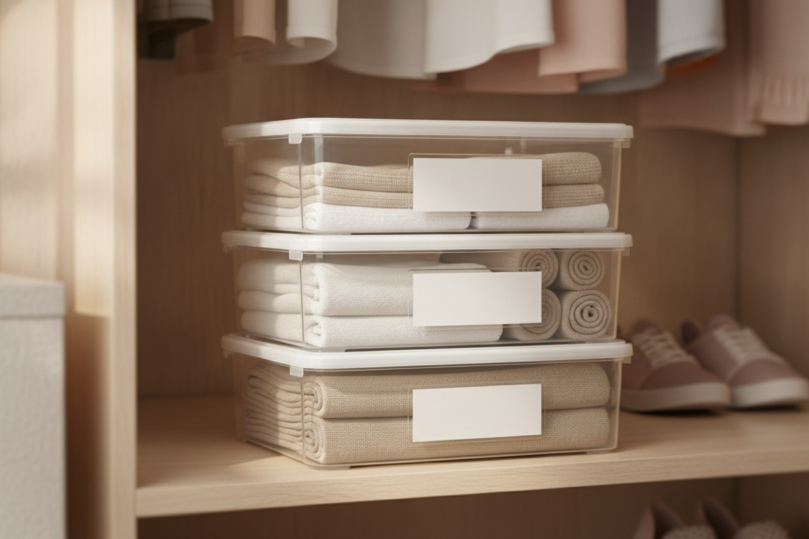
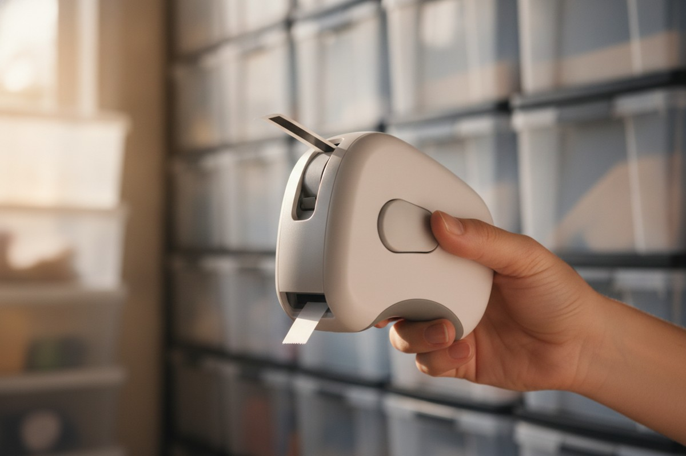

#ad Links on this page are affiliate links: we earn a commission if you buy, at no extra cost to you. As an Amazon Associate I earn from qualifying purchases.
More Gift guide · last-minute
Still shopping?Here's where to start.
Four categories, one pick each, chosen by the spec that actually matters - not the one on the
box. Check each retailer's own shipping cutoff for your zip code; we don't control carrier timing.
We have not tested the Amazon products below. Each one tells you which spec
decides whether it works, so you can judge any listing - including ones we don't link.
For the dog person
Start with something we make, then two gear picks that solve a real problem fast.

AI-generated photo · generic example, not a specific product
Slow feeder bowls
Ridge depth + base width
Ridge depth that suits the snout: deep channels for big or long-nosed dogs, shallow ones for flat-faced breeds that can't reach into deep grooves. A wide, non-slip base - rubber feet or a weighted bottom - so the bowl doesn't skate across the floor mid-meal. Search Amazon for slow feeder bowls →
#ad · affiliate link

AI-generated photo · generic example, not a specific product
No-pull harnesses
Chest-strap width
Both a front clip and a back clip, so you can switch as training improves. A wide, padded chest strap that spreads pressure instead of concentrating it. Search Amazon for no-pull harnesses →
#ad · affiliate link
For the cook
Kitchen gear is the easiest category to get wrong as a gift - these two are decided by one spec each.
See the full kitchen gift guide →
AI-generated photo · generic example, not a specific product
Cast iron skillet
Pre-seasoned, then weight
Pre-seasoned from the factory, so it's usable on arrival rather than needing a multi-session seasoning process. Weight relative to who's lifting it - a 12″ skillet can run 8+ lbs. Search Amazon for cast iron skillet →
#ad · affiliate link

AI-generated photo · generic example, not a specific product
Instant-read meat thermometer
Read speed, then probe length
Read time under 3 seconds, stated in the spec sheet - slower ones get set down and forgotten. A thin probe tip (under 3mm) for accurate reads in thin cuts like chicken breast. Search Amazon for instant-read meat thermometer →
#ad · affiliate link
For the home organizer
Small, giftable, and used the same week - unlike a lot of organizing gear. See the full
home organization guide →

AI-generated photo · generic example, not a specific product
Stackable clear storage bins
Clarity, then a rated stack height
Clear (not frosted) plastic so contents are visible without opening the lid. A stated stack-load rating, not just "stackable" - that's what keeps a bottom bin from cracking. Search Amazon for stackable clear storage bins →
#ad · affiliate link

AI-generated photo · generic example, not a specific product
Label maker
Tape width options, then power source
Multiple tape width options if labeling anything beyond standard bins (spice jars need a narrower tape than file folders). Battery life or a rechargeable port stated, not just "portable". Search Amazon for label maker →
#ad · affiliate link
For the creator
Mic and light picks, by the spec that matters - not a claimed-use list. On our Clarity Stack site:
gifts for video creators →